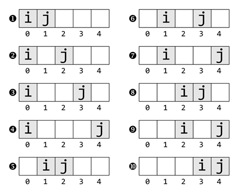

Prev - #25 Multiplication Table | Table of Contents | Next - #27 Rectangle Drawing
There is only one handshake that can happen between two people.
Between three people, there are three possible handshaking pairs. Between four
people, there are six handshakes; five people, ten handshakes, and so on. This
exercise explores the full range of possible handshaking combinations with
nested for loops.
Exercise Description
Write a function named printHandshakes()
with a list parameter named people which will be a list
of strings of people’s names. The function prints out 'X
shakes hands with Y', where X and Y are every possible pair of
handshakes between the people in the list. No duplicates are permitted: if
“Alice shakes hands with Bob” appears in the output, then “Bob shakes hands
with Alice” should not appear.
For example, printHandshakes(['Alice', 'Bob', 'Carol', 'David']) should print:
Alice shakes hands with Bob
Alice shakes hands with Carol
Alice shakes hands with David
Bob shakes hands with Carol
Bob shakes hands with David
Carol shakes hands with David
The printHandshakes() function must also
return an integer of the number of handshakes.
These Python assert statements stop
the program if their condition is False. Copy them
to the bottom of your solution program. Your solution is correct if the output
displays all possible handshakes and the following assert
statements’ conditions are all True:
assert printHandshakes(['Alice', 'Bob']) == 1
assert printHandshakes(['Alice', 'Bob', 'Carol']) == 3
assert printHandshakes(['Alice', 'Bob', 'Carol', 'David']) == 6
Try to write a solution based on the information in this description. If you still have trouble solving this exercise, read the Solution Design and Special Cases and Gotchas sections for additional hints.
Prerequisite concepts: for loops, range() with two arguments, len(),
augmented assignment operators
Solution Design
We need a pair of nested for loops to
obtain the pairs of people in each handshake. The outer for
loop iterates over each index in the person list for the first handshaker, and
the inner for loop iterates over each index in the
person list after the outer loop’s index.
The pattern behind the movements of i
and j are easier to see when visually laid out, as
in Figure 26-1, which uses a 5-item people list as
an example. The indexes i and j
refer to the two people in the handshake:

Figure 26-1: The pattern of i and j’s movement.
As the algorithm runs, j starts after i and moves to the right, and when it reaches the end, i moves right once and j starts
after i again. In the above example with 5 people
(indexes 0 to 4) i starts at 0 and j starts at i + 1, or 1. The j variable increments
until it reaches 4, at which point i increments to 1 and j resets back to i + 1, which
is now 2.
If you look at the overall range of i
and j, you’ll see that i
starts at index 0 and ends at the second to last
index. Meanwhile, j starts at the index after i and ends at the last index. This means our nested for loops over the people list
parameter would look like this:
for i in range(0, len(people) - 1):
for j in range(i, len(people)):
This solution is identical to the nested for
loops in Exercise #42, “Bubble Sort.”
Special Cases and Gotchas
The most common mistake you want to avoid is having repeated
handshakes. This can happen if your nested for loops
cover the full range of indexes in the people list like so:
for i in range(0, len(people)):
for j in range(0, len(people)):
In this case, i and j would run with each pair twice: for example, the first
time with people[i] as the first handshaker and people[j] as the second handshaker, and then with people[i] as the second handshaker and people[j] as the first handshaker.
Now try to write a solution based on the information in the previous sections. If you still have trouble solving this exercise, read the Solution Template section for additional hints.
Solution Template
Try to first write a solution from scratch. But if you have difficulty, you can use the following partial program as a starting place. Copy the following code from https://invpy.com/handshake-template.py and paste it into your code editor. Replace the underscores with code to make a working program:
def printHandshakes(people):
# The total number of handshakes starts at 0:
numberOfHandshakes = ____
# Loop over every index in the people list except the last:
for i in range(0, len(____) - 1):
# Loop over every index in the people list after index i:
for j in range(i + ____, len(____)):
# Print a handshake between the people at index i and j:
print(people[____], 'shakes hands with', people[____])
# Increment the total number of handshakes:
numberOfHandshakes += ____
# Return the total number of handshakes:
return numberOfHandshakes
The complete solution for this exercise is given in Appendix A and https://invpy.com/handshake.py. You can view each step of this program as it runs under a debugger at https://invpy.com/handshake-debug/.
Prev - #25 Multiplication Table | Table of Contents | Next - #27 Rectangle Drawing